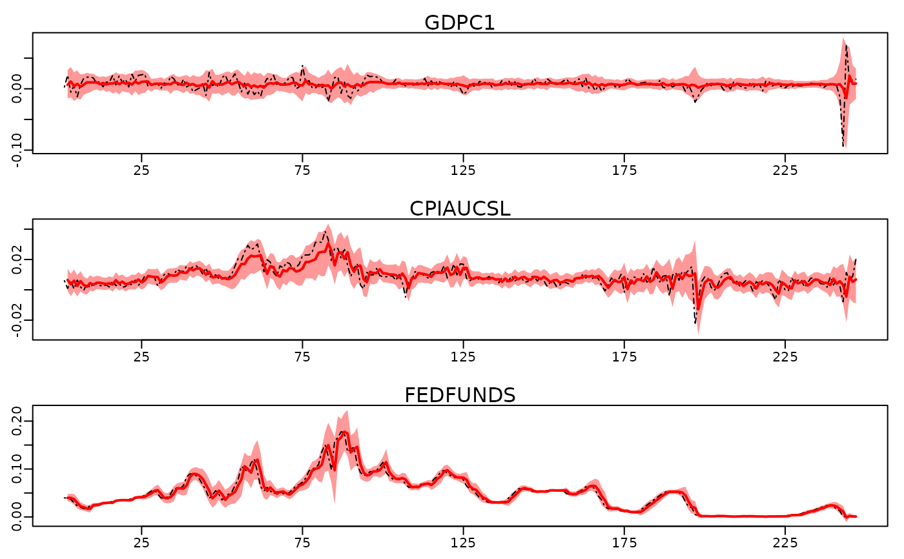

Markov Chain Monte Carlo Sampling for Bayesian Vectorautoregressions
Source:R/bvar_wrapper.R
bvar.Rdbvar simulates from the joint posterior distribution of the parameters
and latent variables and returns the posterior draws.
Usage
bvar(
data,
lags = 1L,
draws = 1000L,
burnin = 1000L,
thin = 1L,
prior_intercept = 100,
prior_phi = specify_prior_phi(data = data, lags = lags, prior = "HS"),
prior_sigma = specify_prior_sigma(data = data, type = "factor", quiet = TRUE),
sv_keep = "last",
quiet = FALSE,
startvals = list(),
expert = list()
)Arguments
- data
Data matrix (can be a time series object). Each of \(M\) columns is assumed to contain a single time-series of length \(T\).
- lags
Integer indicating the order of the VAR, i.e. the number of lags of the dependent variables included as predictors.
- draws
single integer indicating the number of draws after the burnin
- burnin
single integer indicating the number of draws discarded as burnin
- thin
single integer. Every \(thin\)th draw will be stored. Default is
thin=1L.- prior_intercept
Either
prior_intercept=FALSEand no constant term (intercept) will be included. Or a numeric vector of length \(M\) indicating the (fixed) prior variances on the constant term. A single number will be recycled accordingly. Default isprior_intercept=100.- prior_phi
bayesianVARs_prior_phiobject specifying prior for the reduced form VAR coefficients. Best use constructorspecify_prior_phi.- prior_sigma
bayesianVARs_prior_sigmaobject specifying prior for the variance-covariance matrix of the VAR. Best use constructorspecify_prior_sigma.- sv_keep
String equal to
"all"or"last". In case ofsv_keep = "last", the default, only draws for the very last log-variance \(h_T\) are stored.- quiet
logical value indicating whether information about the progress during sampling should be displayed during sampling (default is
TRUE).- startvals
optional list with starting values.
- expert
optional list with expert settings.
Value
An object of type bayesianVARs_bvar, a list containing the following
objects:
PHI: AbayesianVARs_coefobject, an array, containing the posterior draws of the VAR coefficients (including the intercept).U: AbayesianVARs_drawsobject, a matrix, containing the posterior draws of the contemporaneous coefficients (if cholesky decomposition for sigma is specified).logvar: AbayesianVARs_drawsobject containing the log-variance draws.sv_para: AbaysesianVARs_drawsobject containing the posterior draws of the stochastic volatility related parameters.phi_hyperparameter: A matrix containing the posterior draws of the hyperparameters of the conditional normal prior on the VAR coefficients.u_hyperparameter: A matrix containing the posterior draws of the hyperparameters of the conditional normal prior on U (if cholesky decomposition for sigma is specified).bench: Numerical indicating the average time it took to generate one single draw of the joint posterior distribution of all parameters.V_prior: An array containing the posterior draws of the variances of the conditional normal prior on the VAR coefficients.facload: AbayesianVARs_drawsobject, an array, containing draws from the posterior distribution of the factor loadings matrix (if factor decomposition for sigma is specified).fac: AbayesianVARs_drawsobject, an array, containing factor draws from the posterior distribution (if factor decomposition for sigma is specified).Y: Matrix containing the dependent variables used for estimation.Xmatrix containing the lagged values of the dependent variables, i.e. the covariates.lags: Integer indicating the lag order of the VAR.intercept: Logical indicating whether a constant term is included.heteroscedasticlogical indicating whether heteroscedasticity is assumed.Yraw: Matrix containing the dependent variables, including the initial 'lags' observations.Traw: Integer indicating the total number of observations.sigma_type: Character specifying the decomposition of the variance-covariance matrix.datamat: Matrix containing both 'Y' and 'X'.config: List containing information on configuration parameters.
Details
The VAR(p) model is of the following form: \( \boldsymbol{y}^\prime_t = \boldsymbol{\iota}^\prime + \boldsymbol{x}^\prime_t\boldsymbol{\Phi} + \boldsymbol{\epsilon}^\prime_t\), where \(\boldsymbol{y}_t\) is a \(M\)-dimensional vector of dependent variables and \(\boldsymbol{\epsilon}_t\) is the error term of the same dimension. \(\boldsymbol{x}_t\) is a \(K=pM\)-dimensional vector containing lagged/past values of the dependent variables \(\boldsymbol{y}_{t-l}\) for \(l=1,\dots,p\) and \(\boldsymbol{\iota}\) is a constant term (intercept) of dimension \(M\times 1\). The reduced-form coefficient matrix \(\boldsymbol{\Phi}\) is of dimension \(K \times M\).
bvar offers two different specifications for the errors: The user can
choose between a factor stochastic volatility structure or a cholesky
stochastic volatility structure. In both cases the disturbances
\(\boldsymbol{\epsilon}_t\) are assumed to follow a \(M\)-dimensional
multivariate normal distribution with zero mean and variance-covariance matrix
\(\boldsymbol{\Sigma}_t\). In case of the
cholesky specification \(\boldsymbol{\Sigma}_t = \boldsymbol{U}^{\prime -1} \boldsymbol{D}_t
\boldsymbol{U}^{-1}\), where \(\boldsymbol{U}^{-1}\) is upper unitriangular (with ones on
the diagonal). The diagonal matrix \(\boldsymbol{D}_t\) depends upon latent
log-variances, i.e. \(\boldsymbol{D}_t=diag(exp(h_{1t}),\dots, exp(h_{Mt})\). The
log-variances follow a priori independent autoregressive processes
\(h_{it}\sim N(\mu_i + \phi_i(h_{i,t-1}-\mu_i),\sigma_i^2)\) for
\(i=1,\dots,M\). In case of the factor structure,
\(\boldsymbol{\Sigma}_t = \boldsymbol{\Lambda} \boldsymbol{V}_t \boldsymbol{\Lambda}^\prime +
\boldsymbol{G}_t\). The diagonal matrices \(\boldsymbol{V}_t\) and
\(\boldsymbol{G}_t\) depend upon latent log-variances, i.e.
\(\boldsymbol{G}_t=diag(exp(h_{1t}),\dots, exp(h_{Mt})\) and
\(\boldsymbol{V}_t=diag(exp(h_{M+1,t}),\dots, exp(h_{M+r,t})\). The log-variances
follow a priori independent autoregressive processes \(h_{it}\sim N(\mu_i +
\phi_i(h_{i,t-1}-\mu_i),\sigma_i^2)\) for \(i=1,\dots,M\) and
\(h_{M+j,t}\sim N(\phi_ih_{M+j,t-1},\sigma_{M+j}^2)\) for \(j=1,\dots,r\).
MCMC algorithm
To sample efficiently the reduced-form VAR
coefficients assuming a factor structure for the errors, the equation
per equation algorithm in Kastner & Huber (2020) is implemented. All
parameters and latent variables associated with the factor-structure are
sampled using package factorstochvol-package's function update_fsv
callable on the C-level only.
To sample efficiently the reduced-form VAR coefficients, assuming a
cholesky-structure for the errors, the corrected triangular algorithm in
Carriero et al. (2021) is implemented. The SV parameters and latent
variables are sampled using package stochvol's
update_fast_sv function. The precision parameters,
i.e. the free off-diagonal elements in \(\boldsymbol{U}\), are sampled as in
Cogley and Sargent (2005).
References
Gruber, L. and Kastner, G. (2023). Forecasting macroeconomic data with Bayesian VARs: Sparse or dense? It depends! arXiv:2206.04902.
Kastner, G. and Huber, F. Sparse (2020). Bayesian vector autoregressions in huge dimensions. Journal of Forecasting. 39, 1142--1165, doi:10.1002/for.2680 .
Kastner, G. (2019). Sparse Bayesian Time-Varying Covariance Estimation in Many Dimensions Journal of Econometrics, 210(1), 98--115, doi:10.1016/j.jeconom.2018.11.007 .
Carriero, A. and Chan, J. and Clark, T. E. and Marcellino, M. (2021). Corrigendum to “Large Bayesian vector autoregressions with stochastic volatility and non-conjugate priors” [J. Econometrics 212 (1) (2019) 137–154]. Journal of Econometrics, doi:10.1016/j.jeconom.2021.11.010 .
Cogley, S. and Sargent, T. (2005). Drifts and volatilities: monetary policies and outcomes in the post WWII US. Review of Economic Dynamics, 8, 262--302, doi:10.1016/j.red.2004.10.009 .
Hosszejni, D. and Kastner, G. (2021). Modeling Univariate and Multivariate Stochastic Volatility in R with stochvol and factorstochvol. Journal of Statistical Software, 100, 1–-34. doi:10.18637/jss.v100.i12 .
See also
Helpers for prior configuration:
specify_prior_phi(),specify_prior_sigma().Plotting:
plot.bayesianVARs_bvar().Extractors:
coef.bayesianVARs_bvar(),vcov.bayesianVARs_bvar().'stable' bvar:
stable_bvar().summary method:
summary.bayesianVARs_bvar().predict method:
predict.bayesianVARs_bvar().fitted method:
fitted.bayesianVARs_bvar().
Examples
# Access a subset of the usmacro_growth dataset
data <- usmacro_growth[,c("GDPC1", "CPIAUCSL", "FEDFUNDS")]
# Estimate a model
mod <- bvar(data, sv_keep = "all", quiet = TRUE)
# Plot
plot(mod)

# Summary
summary(mod)
#>
#> Posterior median of reduced-form coefficients:
#> GDPC1 CPIAUCSL FEDFUNDS
#> GDPC1.l1 0.236588 0.006926 2.109e-02
#> CPIAUCSL.l1 -0.053390 0.616162 -3.646e-03
#> FEDFUNDS.l1 0.007874 0.037088 1.001e+00
#> intercept 0.005874 0.001291 -8.055e-05
#>
#> Posterior interquartile range of of reduced-form coefficients:
#> GDPC1 CPIAUCSL FEDFUNDS
#> GDPC1.l1 0.089598 0.0290897 0.0252782
#> CPIAUCSL.l1 0.111515 0.0904426 0.0150976
#> FEDFUNDS.l1 0.018416 0.0141909 0.0076726
#> intercept 0.001135 0.0007528 0.0001651